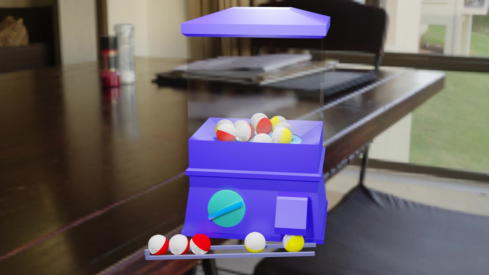

Works
Made with Blender
画像をクリックすると動画や画像が拡大されて表示されます。
-
- ネコ型ロボット
- 顔のテクスチャアニメーションとループ動画で歩行アニメーションを実践しました。
- CreationTime:6h
-
- 鉛筆
- 鉛筆の書いた跡もオブジェクトで制作しました。オブジェクトをmm単位で移動するショートカットキーを知りました。
- CreationTime:3h
-
- サボテン
- シェイプキーとB-boneを用いて制作しました。シェイプキーがうまくいかず苦戦しました。
- CreationTime:3h
-
- アイドル
- 最初に目標として作ったアニメーションです。初めて計画して作りました。テクスチャで動画を再生しました。
- CreationTime:7days
-
- おばけ
- 初めてクロスシミュレーションを使いました。ライティングを工夫し背景も制作しました。
- CreationTime:6h
-
- 洞窟探索
- 以前作ったモデルをパスに沿ってアニメーションさせ、感情を持たせたアニメーションを意識しました。
- CreationTime:5h
-
- 積み木の汽車
- 初めてパスに沿ってアニメーションさせました。背景にも時間をかけ画面全体が見栄えするように心がけました。
- CreationTime:4h
-
- 宇宙
- オブジェクトコンストレイントをもちいて作りました。オブジェクトの親子関係について学びました。
- CreationTime:1h
-
- ちびロボ
- Unityでゲームのキャラクターとして用いるために、３つのアニメーションを作りました。
- CreationTime:6h
-
- IK歩行アニメーション
- 簡単な人型のモデルを制作し、IKを学びました。初めてのIKを使ってのアニメーションだったため苦戦しました。
- CreationTime:3h
-
- ヒットエフェクト
- UVスクロールを用いて、ヒットエフェクトを制作しました。UVスクロールを用いて様々なエフェクトを作りたいです。
- CreationTime:2h
-
- ドーナツ
- 初めてスカルプトを使ってピンク色のチョコレートを表現しました。非常に時間がかかり大変でした。
- CreationTime:6h
-
- コーヒー
- ドーナツと併せて作りました。フォトリアルに仕上がったと思います。
- CreationTime:3h
-

- コップと床
- Blenderで初めて作ったモデルがこのコップです。床はノーマルマップを使って凹凸を表現しました。
- CreationTime:4h
-
- 桜
- アドオンで木を生成し花びらをパーティクルで生成しました。霧のような表現で世界観を演出しました。
- CreationTime:3h
-
- ヤシの木 ガラス
- シェーダーと透過イラストで表現しました。思い通りにできたのでよかったです。
- CreationTime:1h
-

- ガチャガチャ
- リジットボディで表現しました。中の玉が外に排出されるようにしました。
- CreationTime:4h
-
- ロケット
- 炎モデルにアニメーションをつけて表現しました。自分好みな火をモデリングしたいです。
- CreationTime:3h
-
- コーヒーカップ
- オブジェクトの親子関係を考えアニメーションさせました。
- CreationTime:3h
-
- カーテンと風
- クロスシミュレーションと球を使うことで風を表現しました。
- CreationTime:1h
-
- ダイナミックペイント
- シミュレーションですが、流体シミュレーションに比べ軽く、様々な用途に使えそうなので勉強していきたいです。
- CreationTime:1h
-
- 流体シミュレーション
- オブジェクトに干渉させた流体シミュレーションを制作しました。シミュレーションなので思い通りに流れないため使いどころを考える必要があると思いました。
- CreationTime:3h
-

- 自販機
- 画像をもとにUV展開し制作しました。簡単にできたので楽しくモデリングできました。
- CreationTime:3h
-
- 寿司
- テクスチャで脂のすじの凹凸を表現しました。リアルな寿司のモデルにならなかったので、そこが反省点です。
- CreationTime:4h
Made with Unity
-
- BrakeOut
- ネットの記事を参考にして制作しました。WEBGLでビルドしました。
こちらをタップ
- CreationTime:5h
-
- VR
- Unityで360度動画を作成しました。
© Unity Technologies Japan/UCL
- CreationTime:4h
Made with javascript CSS HTML Python PHP
-
- なぞなぞゲーム
- ネットの記事を参考にして制作しました。javascriptで何ができるのかを学びました。
こちらをタップ
- CreationTime:5h
-
- ノベルゲーム
- javascriptで何ができるのかを学び、アウトプットのために制作しました。
こちらをタップ
- CreationTime:1day
-
- 神経衰弱
- アルゴリズムを考えて制作しました。一から考えて作ることは難しいということが分かりました。
こちらをタップ
- CreationTime:3days
-
- 顔認識トリミングアプリ
- opencvを用いて顔認識をし、画像をトリミングできるアプリケーションを制作しました。Pythonを用いました。
こちらをタップ
- CreationTime:1day
-
- 顔認識アプリ
- Microsoft Azureのサービスを用いて顔認識アプリを制作しました。APIを使いました。Pythonを用いました。
こちらをタップ
- CreationTime:3days
-

- 数字判定アプリ
- scikit-learnを用いて制作しました。機械学習についてもっと勉強したいです。Pythonを用いました。
こちらをタップ
- CreationTime:1days
-
- 千歳市 今週のおすすめ飲食店
- 共同でGoogle Apps Scriptを用いて、Webアプリケーションを制作しました。このアプリケーションの飲食店のランキングは毎週自動で更新されます。
こちらをタップ
- CreationTime:1Week
-

- Cute Dog Images
- React,Dog APIを用いて制作しました。Reactをこれからも学んで行きたいと思います。
こちらをタップ
- CreationTime:1day
-
- ポートフォリオ(本サイト)
- レスポンシブ化、OGPを設定しました。レスポンシブ化は非常に難しく苦戦しました。githubにソースコードを上げました。
こちらをタップ
- CreationTime:3days
{kind=link}
{kind=link}
{kind=link}
{kind=link}
{kind=link}